AI 에이전트와 함께한
Kubernetes 플랫폼 엔지니어링의
수직 계열화
클러스터 구축부터 운영 도구, 개발자 경험, 검증 체계까지
이기하
한국공학대학교 겸임교수 · OPDC(Open Platform Developer Community) 리더
OSS WORKBENCH · CLOUD NATIVE · AI-ASSISTED DEVELOPMENT
이 발표는 무엇에 관한 이야기인가
Kubernetes 플랫폼 구축 경험을 AI 에이전트 팀과 오픈소스로 구현·연결해 온 기록
Kube-Ready-Box와 Narwhal로 Kubernetes 환경 구축
NFS Quota Agent로 스토리지 기능 확장
Narwhal Portal과 ClusterDeck으로 개발자·운영자 경험 개선
OpenForge로 AI 에이전트 기반 개발의 표준화 · 검증 자동화 · 품질 관리 체계 구축
개별 프로젝트가 하나의 플랫폼 생태계로 연결되는 과정과, 그 과정에서 얻은 시행착오와 교훈.
AWS를 쓰는데, 왜 이 이야기를 듣는가
관리형 서비스가 채워 주는 것과, 직접 맡게 되는 것
| 플랫폼의 일곱 영역 | AWS에서 흔히 쓰는 대응물 |
|---|---|
| 1 인프라 준비 | EC2 · AMI |
| 2 클러스터 설치 | Amazon EKS |
| 3 네트워크 | VPC CNI · AWS Load Balancer Controller |
| 4 스토리지 | EBS · EFS CSI driver |
| 5 인증 | IAM · EKS Pod Identity · IRSA |
| 6 개발자 포털 | (직접 구성하는 영역) |
| 7 운영 도구 | CloudWatch · Amazon Managed Prometheus/Grafana · ECR |
대응표는 발표자의 분류이며 정확한 1:1 대응이 아닙니다.
관리형 서비스는 영역을 채워 준다. 하지만 영역 사이의 이음새와 업그레이드 검증은 사용자에게 남는다.
온프레미스 · air-gap · 데이터 주권 요구가 붙으면 이 일곱 영역을 직접 맡게 된다. 오늘 프로젝트는 그 상황(로컬 · 온프렘 · air-gap)에서 만든 것.
오늘의 흐름
Day-0 → Day-1 → Day-2 프레임으로 프로젝트를 배치하고, 검증 체계와 에이전트 팀 운영으로 마무리
왜 이 이야기인가 — AWS 관점, 플랫폼의 일곱 영역과 이음새, Day-0/1/2 프레임, 수직 계열화 지도
Day-0 — Kube-Ready-Box · GitHub 이전 · 지속 보안 업데이트
Day-0~2 — Narwhal · 한 달 사이의 릴리스(v1.4.0 · v1.5.0)
Day-2 스토리지 — NFS Quota Agent
Day-2 경험 — Narwhal Portal · ClusterDeck
하나의 생태계 — 프로젝트 간 연결 · Harbor arm64 fork 종료
전 구간 검증 — OpenForge · 외부 개발자와의 논의
AI 에이전트 팀 — 운영 방식 · 실패 사례 · 교훈
Kubernetes 플랫폼에는 설치 말고도 필요한 게 많다
클러스터를 띄우는 것은 시작일 뿐, 일곱 영역이 모두 이어져야 플랫폼이 된다
인프라 준비
OS · 커널 · 디스크
클러스터 설치
부트스트랩 · 버전
네트워크
CNI · LB · 게이트웨이
스토리지
PV · 용량 제한
인증
SSO · OIDC
개발자 포털
온보딩 · 카탈로그
운영 도구
관측 · 접속 · 백업
→ 영역 사이의 이음새가 진짜 문제
개별로 설치하면 이음새에서 반복해서 터진다
DNS · TLS · identity · networking · startup order · version compatibility
플랫폼의 생명주기를 Day-0 · Day-1 · Day-2로 나눈다
어떤 일이 어느 시점에 필요한가
수직 계열화: 플랫폼 생명주기를 아래에서 위로 잇는다
인프라 → 클러스터 → 스토리지 → 개발자·운영자 경험, 전체를 검증 체계가 감싼다
Kube-Ready-Box: Kubernetes 이전의 OS readiness
Kubernetes installer가 아니라 '올라가기 전의 준비 상태'를 이미지로 만든다
로컬 클러스터를 반복해서 만들 때 OS 튜닝, kernel modules, networking, storage prerequisites를 매번 준비하고 ARM64/AMD64·provider 차이도 따로 관리해야 한다.
Packer로 Kubernetes용 base image를 사전 구성해 GitHub Release + Pages 카탈로그로 배포 — 같은 OS baseline을 재사용. (이전 경위는 다음 장)
보안 재빌드는 그다음 장
- swap 비활성화 · kernel modules (
br_netfilter,overlay,iscsi_tcp) - IP forwarding · conntrack / network buffer 튜닝
/sys/fs/bpf영구 마운트 (Cilium eBPF)- open-iscsi · nfs-common 등 스토리지 전제
- chrony 시간 동기화 (etcd clock-skew 대응)
- 보안 하드닝 (needrestart 제거 등)
지원 박스 — Ubuntu 24.04/26.04: VMware(arm64) · VirtualBox(amd64) / Rocky 9.9: VMware arm64만 / NixOS: libvirt arm64만
배포 채널이 사라졌다: Vagrant Cloud → GitHub으로 이전
박스를 올려 두던 호스팅이 종료 일정을 공지했고, v0.3.0에서 GitHub으로 옮겼다
.box본체는 GitHub Release 자산- 박스 카탈로그 JSON은 GitHub Pages — Vagrant는 응답이
Content-Type: application/json일 때만 카탈로그로 인식한다 - 카탈로그 덕에 체크섬 검증과
vagrant box update/outdated가 그대로 동작
vagrant box add https://dasomel.github.io/kube-ready-box/boxes/ubuntu-24.04-ext4.json- 함정: Ubuntu 버전 라인을 1.1.0 → 0.3.x로 리셋했다. 1.1.0을 받아 둔 사용자는
vagrant box remove dasomel/<box> --box-version 1.1.0을 한 번 해야 한다 (Vagrant가 1.1.0을 0.3.x보다 높게 친다) - 규칙: 게시한 버전의 자산은 교체하지 않는다 — 새 빌드는 새 버전
이미지는 한 번 굽고 끝나지 않는다: 매일 스캔, 매주 재빌드
배포한 박스를 매일 다시 스캔하고, 실패하면 이슈가 열리고, 재빌드로 닫는다
스캔 (Trivy)
발견 시 실패
자동 생성·갱신
(스캔 · 부팅)
이슈 자동 종료
| 실제 기록 (2026-11) | ||
|---|---|---|
| 이슈 | 열림 → 닫힘 | 대응 릴리스 |
| #100 | 11-08 → 11-08 | v0.3.2 보안 재빌드 |
| #112 | 11-09 → 11-10 | v0.3.3 (yq) |
| #125 | 11-17 → 11-22 | v0.3.5 (커널) |
| — | 11-15 | v0.3.4 glibc · perl |
3주 동안 릴리스 6개 (v0.3.0 ~ v0.3.5)
- #125는 닫히기까지 5일, 그동안 예약 스캔이 6일 연속 실패 — 배포 중이던 박스에 수정 가능한 커널 CVE가 있었다는 뜻
- yq의 MEDIUM CVE 1건은 상류 수정 릴리스가 없어 아직 열려 있고, 스캔 예외로 가리지 않았다
Narwhal: 이음새를 제품 경계로 다루는 IDP
GitOps · IAM/SSO · Service Mesh · Observability · Registry · Storage · Backup · Policy · API Gateway · Portal
수십 개 Cloud Native 프로젝트를 따로 설치하면 이음새에서 장애가 반복되고 업그레이드마다 재검증해야 함
48개 GitOps-managed application을 하나의 reproducible IDP로 통합하고, 576건의 incident knowledge를 492개 regression checks와 live verification suite로 연결
수치는 commit 수 자랑이 아니라 통합 복잡성을 반복해서 검증했다는 운영 증거.
Narwhal 아키텍처: 계층으로 쌓은 48개 애플리케이션
UI는 Portal(화면은 뒤에서) · v1.4.0에서 Falco 재활성, Trivy · Headlamp 등도 포함 (그림에는 일부만)
Knowledge as Tests: 장애를 회귀 검증으로 바꾼다
lessons-log.md의 incident가 다음 업그레이드의 관문(gate)이 된다
검증은 'pod가 Running인가?'에서 끝나지 않는다
세 계층 검증(Day-2)과 오프라인 번들(Day-0)
한 달 사이 v1.4.0 · v1.5.0: 사고가 설계를 바꿨다
2026-11-08 · 11-14 — 릴리스 노트와 이슈 상태 그대로
- v1.4.0 (11-08) NFS 쓰기 폭주로 etcd WAL fsync가 8초 초과 → NFS export를 전용 200GB XFS(prjquota) 디스크로 분리
- CNPG WAL 아카이빙이 약 20시간 감지 없이 실패 → 알림 신설
- Falco 재활성(0.45.1) · Velero UI의 하드코딩 JWT 패스프레이즈 수정
- v1.5.0 (11-14) 단일 노드 프로파일: 10 vCPU / 24GB VM 1대, 무인
up.sh1회 약 38분 (HA 아님, 개발용) - OpenBao 암호화 백업 활성화
- Kyverno 이미지 서명 정책은 여전히
Audit전용 (narwhal#35 open). Cosign v3 서명 검증 불일치(#684)는 11-19 해결 - 부트스트랩 중 mesh-wide PERMISSIVE 유지 (#126 open)
- v1.5.0 HA 검증에서 프로비저닝 중 수동 복구 2건이 필요했다
NFS Quota Agent: PVC 용량과 실제 사용량 사이의 공백
Kubernetes Storage API와 실제 Filesystem 사이의 제어 공백을 메운다
NFS 기반 PersistentVolume은 PVC 용량이 파일시스템의 실제 사용량 제한으로 자동 연결되지 않아 하나의 워크로드가 공유 저장소를 소진할 수 있다.
NFS 서버 노드에서 PV를 감시하고 파일시스템 Project Quota를 자동 적용해 XFS · ext4 · Btrfs에서 실제 사용량을 강제한다.
quota 명령은 NFS client가 아니라 실제 NFS server의 local filesystem에서 실행되어야 한다.
v0.6.0은 기능이 아니라 검증 릴리스 — ext4 · Btrfs · amd64가 실제 커널 E2E로 verified 격상, k3s · NFS-Ganesha E2E 추가, burst 도중 에이전트 강제 종료 후 복구 검증. QuotaPolicy CRD는 여전히 v1alpha1 · 기본 꺼짐.
NFS Quota Agent 화면: 사용량 · 추세 · 정책
Web UI(선택 기능) — 클릭하면 확대


출처: dasomel/nfs-quota-agent Web UI 캡처 (cne.io.kr/images/nfs-quota-agent) · 이 밖에 02-orphans, 05-audit-logs
Narwhal Portal: 플랫폼 전체를 한 화면에서
원천 시스템은 그대로 두고, 여러 신호를 하나의 사용자 경험으로 묶는다
GitOps · SSO · 모니터링 · 스토리지 · 보안은 각자의 UI를 가져 플랫폼 전체 상태와 작업 흐름을 한곳에서 이해하기 어렵다.
상태 · 애플리케이션 · 노드 · 카탈로그 · 보안 · 비용 · 거버넌스를 하나의 Next.js 포털로 통합 → day-2 운영 경험 단순화
Narwhal = platform integration + operation
Portal = developer / operator experience
11월 리디자인(1.1.11~1.1.13) · 테넌트 격리 fail‑closed(1.1.16~17: 팀 매핑이 없으면 전체가 아니라 빈 화면) · Compliance 3-state(1.1.24)
Next.js · React · TypeScript · Keycloak OIDC · Valkey · OpenBao Agent Injector
Narwhal Portal 화면 (1): 홈 대시보드와 클러스터 인프라
클릭하면 확대

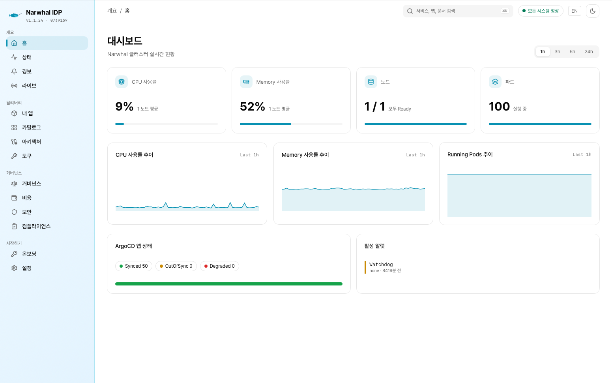

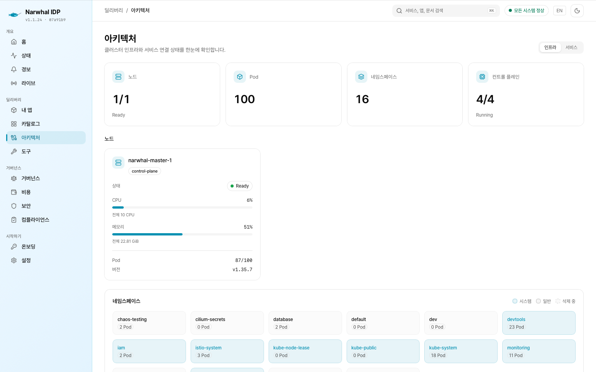
Portal v1.1.24 · 로컬 단일 노드 클러스터에서 2026-11-23 캡처
Narwhal Portal 화면 (2): 카탈로그 · 경보 · 보안 · 컴플라이언스
Portal v1.1.24 · 2026-11-23 로컬 캡처 — 클릭하면 확대 (경보는 v1.1.10에서 추가된 화면)

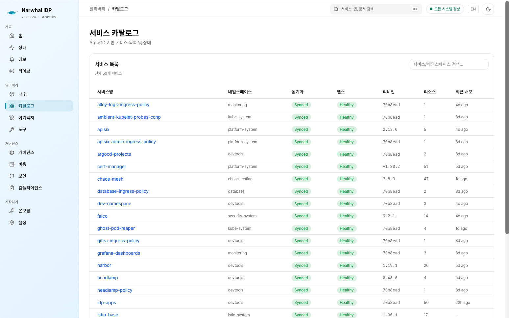

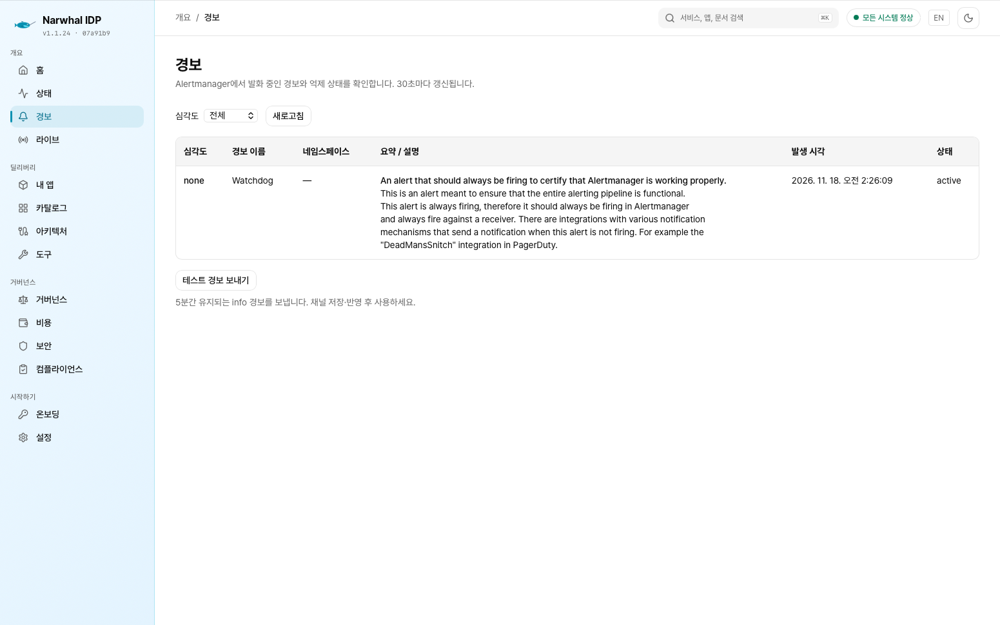

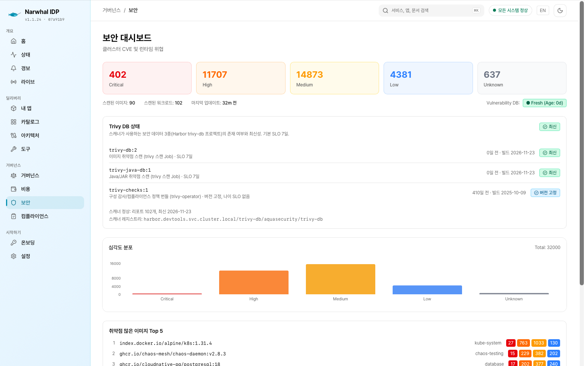

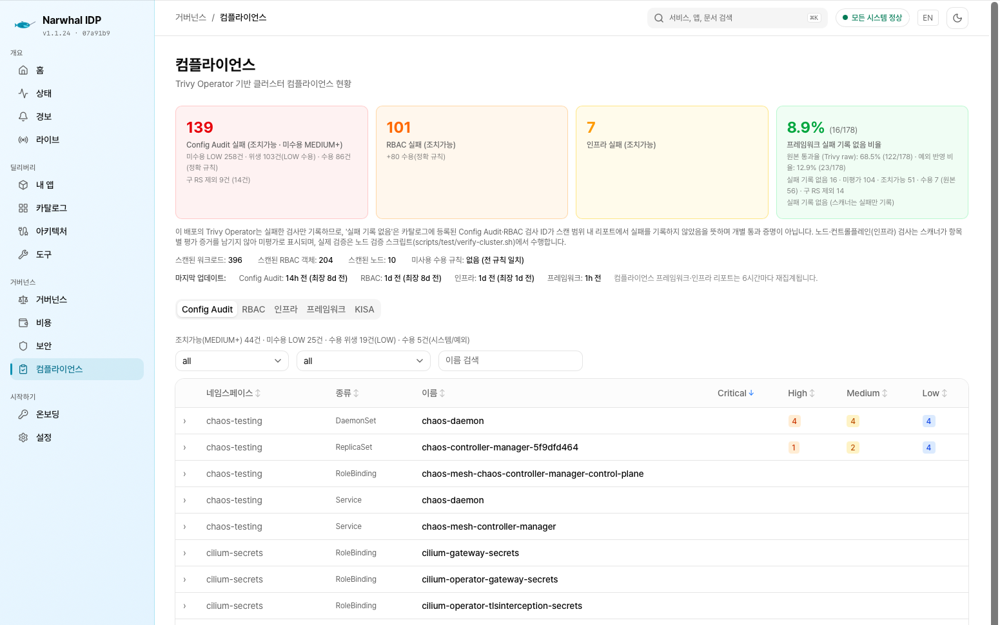
Narwhal Portal 화면 (3): 상태 · 내 앱 · 비용 · 거버넌스
Portal v1.1.24 · 2026-11-23 로컬 캡처 — 클릭하면 확대

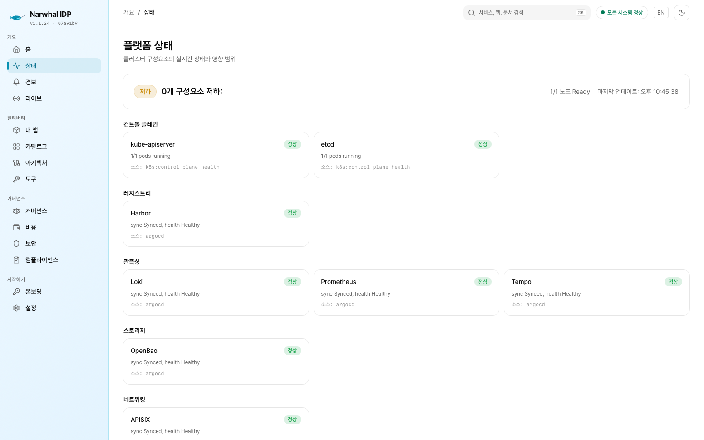

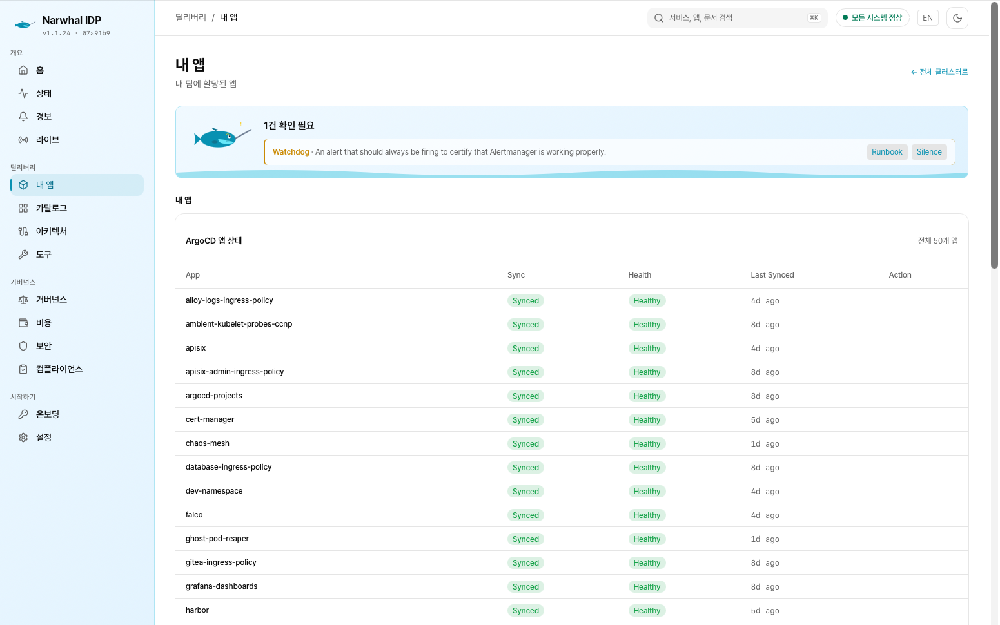

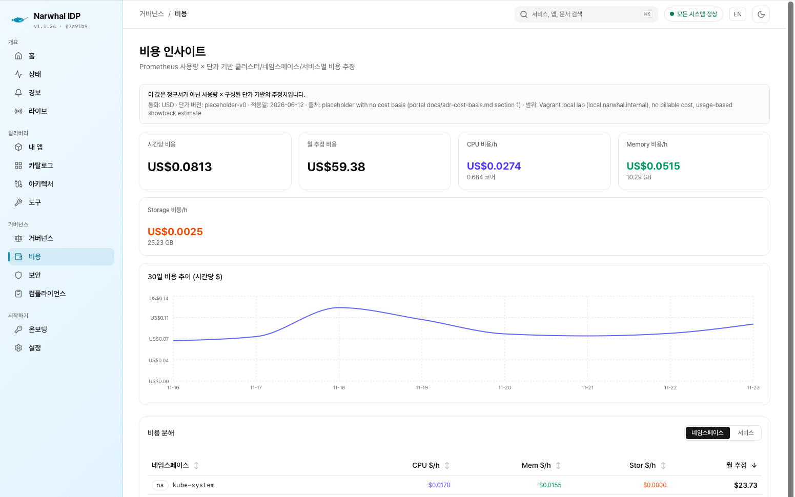

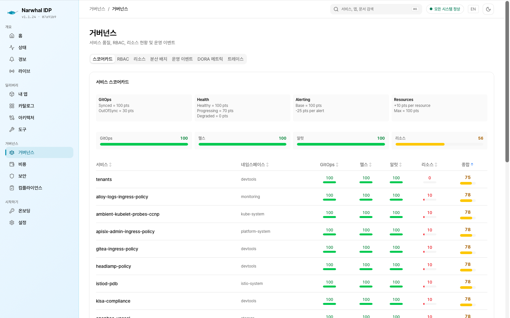
ClusterDeck: 자주 재생성되는 환경에 안정적으로 접속
IP 대신 Profile 이름을 유지하고, 접속 경로 정리를 하나의 macOS 데스크톱 UX로
로컬 VM·Kubernetes 환경을 자주 만들고 지우면 IP가 바뀌고 SSH alias, Bastion/ProxyJump, 원격 kubeconfig, context 이름을 매번 수동으로 다시 연결해야 한다.
host discovery → SSH bootstrap → alias/ProxyJump → kubeconfig fetch/normalize → connectivity check를 Profile 중심 흐름으로 묶는다.
관리 콘솔이 아니라 원격 환경을 발견해 접속 가능하게 만드는 workstation access layer.
최근 추가 — 로컬 VM 인벤토리(Colima · VirtualBox · VMware · Vagrant) · 엔드포인트 초기 관리자 로그인 공개(Reveal login: 본인 Kubernetes RBAC로 게이트, 저장 안 함, v0.8.0) · 로컬 VM 삭제(이중 확인, v0.9.0)
ClusterDeck 화면: Profile · Host · kubeconfig
최신 v0.9.0 (2026-11-22) · Unsigned build(ad-hoc, Developer ID 없음) · 클릭하면 확대

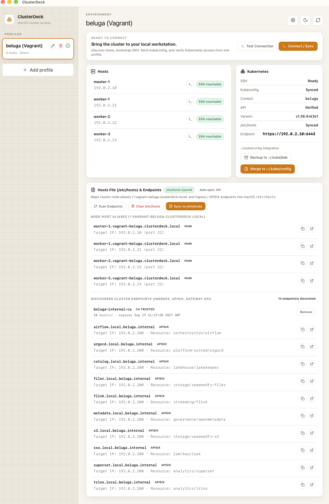

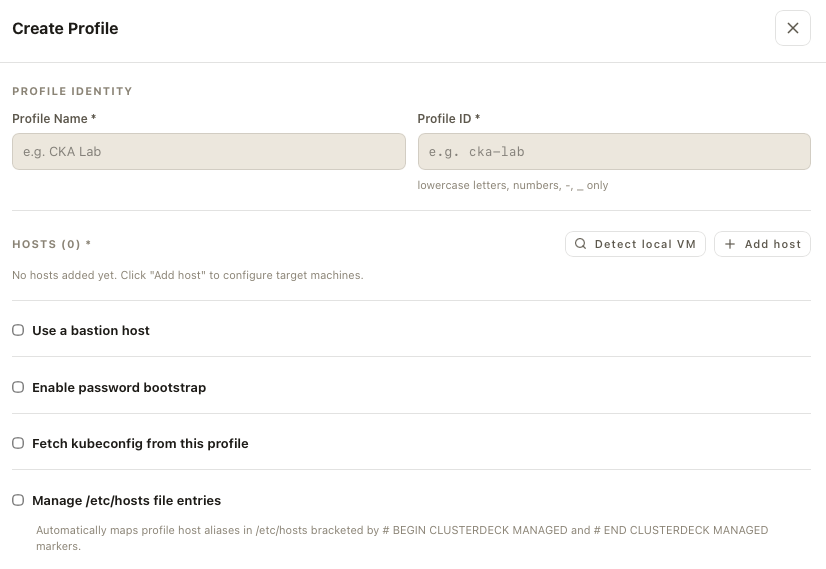

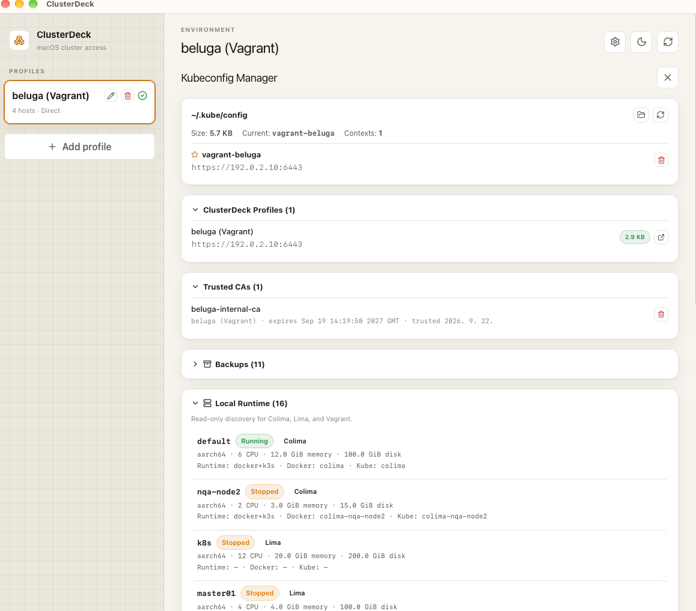
출처: dasomel/clusterdeck 앱 캡처 (2026-09 캡처 · 이후 Reveal login · VM 삭제 등 추가됨)
여섯 프로젝트가 하나의 생태계가 되는 방식
각 프로젝트 문서의 '프로젝트 관계' 절을 한 장에 합친 지도 (KubeMetal은 점선 · 데이터 플랫폼 Beluga · LDAPium은 오늘 다루지 않음)
Harbor arm64 fork: upstream이 따라오면 내려놓는다
Bitnami 무료 이미지 종료로 시작해 11개월 운영하고, 공식 v2.16.0의 arm64 지원에 맞춰 종료 (2026-11-21)
ghcr.io/dasomel/goharbor/)- fork는 '유지'가 일 — 3시간마다 upstream 동기화, workflow 1,700회 이상. 충돌 시 fork 버전으로 남긴 파일은 조용히 낡는다
ubuntu-latest는 계약이 아니다 — 2026-10-19 Ubuntu 26.04 전환으로 코드 변경 없이 CI가 깨졌다. runner 버전 고정- 멀티아키는 내 코드보다 베이스 이미지 문제
- 예약 실행은 보장되지 않는다
- arm64 지원은 upstream PR #22311로 들어갔고, 이 fork의 기여가 아니다
- v2.15.5는 arm64로 내지 못했다 — 2.15 라인 베이스 이미지
goharbor/photon:5.0-legacy가 2026-11-09 갱신 뒤 amd64 전용이 됐다. fork의 마지막 릴리스는 v2.15.4
공백을 upstream이 메워 주면, 미련 없이 내려놓는 것도 운영이다.
OpenForge: 설명과 구현이 어긋나지 않게 하는 체계
템플릿 모음에서 출발해 Blueprint + Standards + Evidence 기반 운영 모델 + Portfolio Control Plane으로
OSS가 늘수록 repository별 문서 · CI · 보안 · Agent 지침 · 릴리스 · 유지보수 상태가 다르게 진화해 설명과 구현, 검증 근거가 어긋난다.
공통 Standards · Templates + executable audit + evidence-driven agent workflow + lifecycle registry로 engineering intent를 재현·검증·리뷰 가능한 시스템으로 운영.
코드가 생성됐거나 merge됐다는 사실을 완료로 보지 않는다. 의도한 경계에서 실제로 동작하고, 적절한 evidence로 검증되고, release·rollback 영향까지 이해됐을 때 완료.
규칙을 '문서'와 '실행'으로 분리한다
영향이 큰 변경(Class C/D)은 review-gated Change Package를 먼저 거친다
증거 등급을 구분하고, 낮은 등급이 높은 주장을 못 하게 한다
Rust CLI openforge assess — L1 Repository · L2 Execution · L3 Runtime
Agent Execution Security: 도구를 고를 수 있다 ≠ 실행해도 된다
승인하는 것은 자연어 의도가 아니라 '실제로 실행될 resolved invocation'
Narwhal Portal — node Auto-Fix: server가 target/argument를 resolve하고 digest 승인, 실행 직전 actor·digest·expiry·replay 재검사
KubeMetal — 아직 없는 L3 실행을 위해 authority ceiling 계약부터 선행
Beluga — read-only 진단 PoC, 위험 class 3종은 승인 메타데이터가 있어도 차단
kube-ready-box — RuntimeClass YAML 존재와 실제 sandbox 실행을 declared → supported → effective → verified로 분리
Agent가 없는 프로젝트(nfs-quota-agent · LDAPium · ClusterDeck)에는 Agent를 새로 넣지 않고 reduced profile만 정의
Portfolio Control Plane: merge ≠ 완료
각 repository가 검증한 상태를 publication 계약으로 올리고, OpenForge는 commit 수로 추측하지 않는다
레지스트리 스냅샷 2026-11-22 기준 (openforge portfolio/dashboard.json의 updated_at, 대시보드 cne.io.kr/oss). 대시보드는 development status · adoption · maintenance lifecycle · blast radius · exit-path readiness까지 표현한다.
같은 대시보드의 정직한 수치 — security readiness: 측정한 3개 저장소 모두 fail(18개 신호 중 pass 6) · agent audit: 9개 저장소 중 7곳에 에이전트 지침 변경을 지키는 로컬 CI gate 없음, 삼킨 실패(swallowed failure) 0건
외부 개발자의 디자인 기여가 실제 대시보드로 이어졌다
openforge#128 → Figma 참조 설계 → 리뷰 → 라이브 대시보드 (cne.io.kr/ko/oss/dashboard/)
논의가 설계로 이어진 사례, 그리고 아직 열려 있는 것
건전한 생태계가 만들어지는 중 — 과장하지 않고 상태를 그대로
- Aliipou의 spend-once 제안은 OpenForge 공통 계약(ADR-0013)까지 반영됐다
- 디자인 기여는 라이브 대시보드가 됐다 (openforge#128)
- 사용자 버그 제보가 8일 만에 재현 · 우회 · 종료, 템플릿 수정 PR #80으로 이어졌다 (2026-10-26 머지)
- 대부분의 설계 이슈가 아직 open
- 일부 의견은 각자 프로젝트와 연결된 소개 성격 — 채택 · 협업 확정은 아님
AI 에이전트 팀은 어떻게 일하는가
사람이 목표를 정하고, 오케스트레이터가 나눠 주고, 결과는 모두 되돌아온다
시행착오: '초록불'이 거짓말을 한 순간들
모두 프로젝트 문서와 글에 기록된 실제 사례
daily-openbao Completed|| true로 끝난 등록 스크립트가장 아팠던 실패: PASS인데 ArgoCD 앱이 0개였다
검사는 거짓말을 하지 않았다 — 응시자가 0명이면 '전원 합격'은 참이다
교훈: 네 문장으로 줄이면
AI의 속도를 쓰면서 신뢰성을 지키는 기준
구현 능력은 실행 권한이 아니다
Implementation capability is not execution authority.
완료 주장은 증거가 아니다
A completion claim is not evidence.
낮은 증거 등급은 더 강한 runtime 성질을 주장하지 못한다
A lower evidence class must not claim a stronger runtime property.
merge된 코드는 검증된 상태가 게시되기 전까지 포트폴리오 완료가 아니다
Merged code is not portfolio completion until verified state is published.
에이전트가 구현을 맡을수록, 사람이 쥘 것의 위치가 바뀐다
사람의 책임이 없어지는 게 아니라 이동한다
정리: 수직으로 잇고, 증거로 검증한다
개별 OSS를 넘어 플랫폼 생명주기의 핵심 영역을 하나의 검증 가능한 체계로
잇기 — Day-0 Kube-Ready-Box → Day-0~2 Narwhal → Day-2 NFS Quota Agent · Portal · ClusterDeck
검증하기 — 장애는 회귀 검증으로, 에이전트의 실행은 resolved invocation 승인으로, 완료는 증거와 게시된 상태로
남기기 — 모델은 바뀌어도 규칙 · 아키텍처 · 테스트 · 운영 지식은 repository에 — 다음 사람과 다음 에이전트가 이어받을 수 있게
단순 코드 생성이 아니라, 검증 가능한 엔지니어링 체계.
관련 링크 · 질문
QR로 바로 열기 — 발표 자료와 프로젝트는 모두 공개되어 있습니다
Narwhal · github.com/dasomel/narwhal
OpenForge · github.com/dasomel/openforge
GitHub github.com/dasomel · LinkedIn linkedin.com/in/ba909924 · cne.io.kr
질문 · 이슈는 GitHub Issues로 환영합니다.